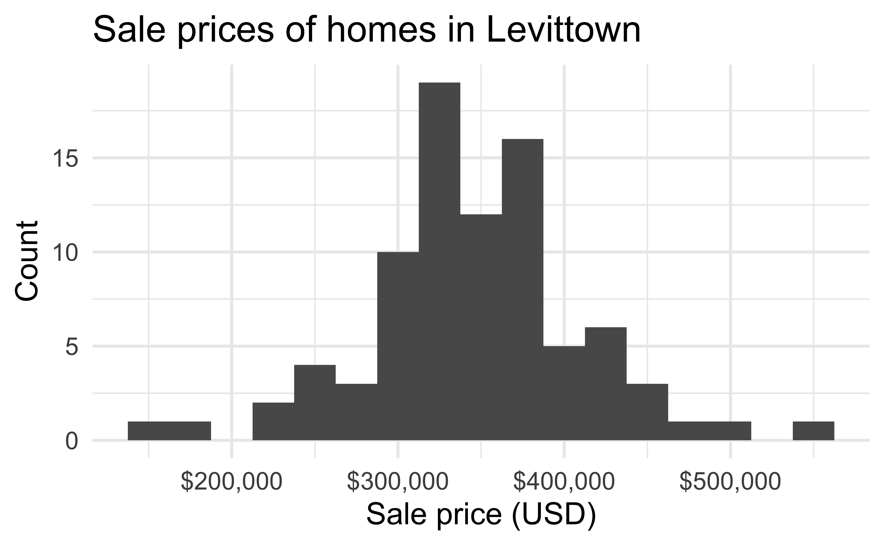

# load packages
library(tidyverse) # for data wrangling and visualization
library(tidymodels) # for modeling
library(openintro) # for the duke_forest dataset
library(scales) # for pretty axis labels
library(knitr) # for pretty tables
library(patchwork) # for laying out plots
library(GGally) # for pairwise plots
# set default theme and larger font size for ggplot2
ggplot2::theme_set(ggplot2::theme_minimal(base_size = 20))Multiple linear regression (MLR)
STA 210 - Spring 2022
Dr. Mine Çetinkaya-Rundel
Welcome
Announcements
Lab 3:
- Any questions about lab / teamwork?
- Due Friday, Feb 4 at 5pm
Exam 1:
- Released Friday, Feb 4
- Multiple choice questions (mostly conceptual) + open-ended exercises (like lab + homework)
- Open book, open internet, open questions to me + Rick (head TA) only
- No communication with others or posting questions on the internet allowed
- What can you do to start preparing?
Review readings, assignments, feedback returned
Organize your notes
Come to office hours with questions
Computational setup
Considering multiple variables
House prices in Levittown
- The data set contains the sales price and characteristics of 85 homes in Levittown, NY that sold between June 2010 and May 2011.
- Levittown was built right after WWII and was the first planned suburban community built using mass production techniques.
- The article “Levittown, the prototypical American suburb – a history of cities in 50 buildings, day 25” gives an overview of Levittown’s controversial history.
Analysis goals
We would like to use the characteristics of a house to understand variability in the sales price.
To do so, we will fit a multiple linear regression model.
Using our model, we can answers questions such as
- What is the relationship between the characteristics of a house in Levittown and its sale price?
- Given its characteristics, what is the expected sale price of a house in Levittown?
The data
# A tibble: 85 × 7
bedrooms bathrooms living_area lot_size year_built property_tax sale_price
<dbl> <dbl> <dbl> <dbl> <dbl> <dbl> <dbl>
1 4 1 1380 6000 1948 8360 350000
2 4 2 1761 7400 1951 5754 360000
3 4 2 1564 6000 1948 8982 350000
4 5 2 2904 9898 1949 11664 375000
5 5 2.5 1942 7788 1948 8120 370000
6 4 2 1830 6000 1948 8197 335000
7 4 1 1585 6000 1948 6223 295000
8 4 1 941 6800 1951 2448 250000
9 4 1.5 1481 6000 1948 9087 299990
10 3 2 1630 5998 1948 9430 375000
# … with 75 more rowsVariables
Predictors:
bedrooms: Number of bedroomsbathrooms: Number of bathroomsliving_area: Total living area of the house (in square feet)lot_size: Total area of the lot (in square feet)year_built: Year the house was builtproperty_tax: Annual property taxes (in USD)
Response: sale_price: Sales price (in USD)
EDA: Response variable

EDA: Predictor variables

EDA: Response vs. Predictors

EDA: All variables

Single vs. multiple predictors
So far we’ve used a single predictor variable to understand variation in a quantitative response variable
Now we want to use multiple predictor variables to understand variation in a quantitative response variable
Multiple linear regression
Multiple linear regression (MLR)
Based on the analysis goals, we will use a multiple linear regression model of the following form
\[ \begin{aligned}\hat{\text{sale_price}} ~ = & ~ \hat{\beta}_0 + \hat{\beta}_1 \text{bedrooms} + \hat{\beta}_2 \text{bathrooms} + \hat{\beta}_3 \text{living_area} \\ &+ \hat{\beta}_4 \text{lot_size} + \hat{\beta}_5 \text{year_built} + \hat{\beta}_6 \text{property_tax}\end{aligned} \]
Similar to simple linear regression, this model assumes that at each combination of the predictor variables, the values sale_price follow a Normal distribution.
Regression Model
Recall: The simple linear regression model assumes
\[ Y|X\sim N(\beta_0 + \beta_1 X, \sigma_{\epsilon}^2) \]
Similarly: The multiple linear regression model assumes
\[ Y|X_1, X_2, \ldots, X_p \sim N(\beta_0 + \beta_1 X_1 + \beta_2 X_2 + \dots + \beta_p X_p, \sigma_{\epsilon}^2) \]
The MLR model
For a given observation \((x_{i1}, x_{i2} \ldots, x_{ip}, y_i)\)
\[ y_i = \beta_0 + \beta_1 x_{i1} + \beta_2 x_{i2} + \dots + \beta_p x_{ip} + \epsilon_{i} \hspace{8mm} \epsilon_i \sim N(0,\sigma_\epsilon^2) \]
Prediction
At any combination of the predictors, the mean value of the response \(Y\), is
\[ \mu_{Y|X_1, \ldots, X_p} = \beta_0 + \beta_1 X_{1} + \beta_2 X_2 + \dots + \beta_p X_p \]
Using multiple linear regression, we can estimate the mean response for any combination of predictors
\[ \hat{Y} = \hat{\beta}_0 + \hat{\beta}_1 X_{1} + \hat{\beta}_2 X_2 + \dots + \hat{\beta}_p X_{p} \]
Model fit
| term | estimate | std.error | statistic | p.value |
|---|---|---|---|---|
| (Intercept) | -7148818.957 | 3820093.694 | -1.871 | 0.065 |
| bedrooms | -12291.011 | 9346.727 | -1.315 | 0.192 |
| bathrooms | 51699.236 | 13094.170 | 3.948 | 0.000 |
| living_area | 65.903 | 15.979 | 4.124 | 0.000 |
| lot_size | -0.897 | 4.194 | -0.214 | 0.831 |
| year_built | 3760.898 | 1962.504 | 1.916 | 0.059 |
| property_tax | 1.476 | 2.832 | 0.521 | 0.604 |
Model equation
\[ \begin{align}\hat{\text{price}} = & -7148818.957 - 12291.011 \times \text{bedrooms}\\[5pt] &+ 51699.236 \times \text{bathrooms} + 65.903 \times \text{living area}\\[5pt] &- 0.897 \times \text{lot size} + 3760.898 \times \text{year built}\\[5pt] &+ 1.476 \times \text{property tax} \end{align} \]
Interpreting \(\hat{\beta}_j\)
- The estimated coefficient \(\hat{\beta}_j\) is the expected change in the mean of \(y\) when \(x_j\) increases by one unit, holding the values of all other predictor variables constant.
- Example: The estimated coefficient for
living_areais 65.90. This means for each additional square foot of living area, we expect the sale price of a house in Levittown, NY to increase by $65.90, on average, holding all other predictor variables constant.
Prediction
What is the predicted sale price for a house in Levittown, NY with 3 bedrooms, 1 bathroom, 1,050 square feet of living area, 6,000 square foot lot size, built in 1948 with $6,306 in property taxes?
[1] 265360.4The predicted sale price for a house in Levittown, NY with 3 bedrooms, 1 bathroom, 1050 square feet of living area, 6000 square foot lot size, built in 1948 with $6306 in property taxes is $265,360.
Prediction, revisit
Just like with simple linear regression, we can use the predict() function in R to calculate the appropriate intervals for our predicted values:
Confidence interval for \(\hat{\mu}_y\)
Calculate a 95% confidence interval for the estimated mean price of houses in Levittown, NY with 3 bedrooms, 1 bathroom, 1050 square feet of living area, 6000 square foot lot size, built in 1948 with $6306 in property taxes.
Prediction interval for \(\hat{y}\)
Calculate a 95% prediction interval for an individual house in Levittown, NY with 3 bedrooms, 1 bathroom, 1050 square feet of living area, 6000 square foot lot size, built in 1948 with $6306 in property taxes.
Cautions
- Do not extrapolate! Because there are multiple predictor variables, there is the potential to extrapolate in many directions
- The multiple regression model only shows association, not causality
- To show causality, you must have a carefully designed experiment or carefully account for confounding variables in an observational study
Recap
Introduced multiple linear regression
Interpreted a coefficient \(\hat{\beta}_j\)
Used the model to calculate predicted values and the corresponding intervals